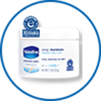

第一課：敏感肌膚的
基本認識
專業敏感肌護理
冬日修護敏感肌及濕疹對策
冬天氣溫容易令肌膚出現乾燥、脫皮、敏感發癢及濕疹等問題，想給肌膚一個呵護潤澤的冬天？
立即看看以下5個小貼士：
室內暖氣令你肌膚更乾燥：
為減少肌膚水分流失，不要將室內溫度調得過高。可以放置一個加濕器讓肌膚吸收水分。
保護雙手肌膚：
由於雙手肌膚較其他身體部位薄，所以雙手會最先出現乾燥或受損痕跡。可於冬天時穿戴手套或勤於塗抹乳霜以保持滋養。
避免羊毛或毛織品：
毛或毛織品質地較粗糙及短身，容易對身體造成敏感。可於穿著羊毛或毛織品前先穿上棉衣，抵擋敏感肌形成。

溫和地去除脫皮部位：
乾燥天氣少不免會令身體造成脫皮，切記不要強行去除，應多加潤膚霜為脫皮部位修護。

晚上為肌膚提供足夠滋養：
可睡前於乾燥或敏感部位塗上 Vaseline® 專業修護低敏潤膚霜，讓它們自行吸收及徹夜修護，締造健康嫩肌。